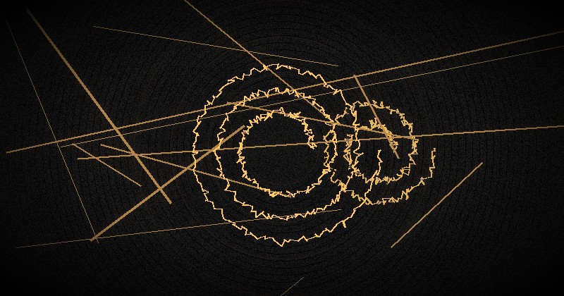

Sigil vs Servitor: Complete Comparison Guide
Introduction: Two Pillars of Chaos Magick
In chaos magick, two techniques stand above all others in terms of power, versatility, and historical importance: sigil magic and servitor creation. Both are methods of condensing will into a form that can operate beyond ordinary consciousness — but they serve fundamentally different purposes and operate on vastly different scales.
The question beginners ask most often is: "What is the difference between a sigil and a servitor?" This guide answers that question in full. We will compare them across every relevant dimension, provide step-by-step creation guides for both, explore when to use each, show how they complement each other, and point you toward the best digital tools for each practice.
If you practice chaos magick, understanding the sigil vs servitor distinction is essential. Using the wrong tool for the job is the single most common mistake beginners make — and it is easily avoided.
Quick Comparison Table
| Aspect | Sigil | Servitor |
|---|---|---|
| Duration | One-time until discharged | Ongoing until dismissed |
| Complexity | Simple glyph | Complex thought-form |
| Consciousness | No consciousness | Semi-autonomous |
| Creation Time | Minutes | Hours to days |
| Maintenance | None | Regular feeding |
| Best For | Single specific goal | Ongoing tasks |
What Is a Sigil?
A sigil is a symbolic representation of a specific intention, compressed into a unique abstract glyph and charged with magical will. The technique was systematized by the English occultist Austin Osman Spare (1886–1956), who introduced the method of writing a statement of intent, removing repeated letters, and combining the remaining characters into a condensed symbol.
Spare's innovation was recognizing that the conscious mind acts as a gatekeeper, filtering out desires that seem impossible or impractical. By encoding the desire into a symbol and firing it into the subconscious during an altered state (gnosis), the critical faculty is bypassed, and the intention is released to manifest without resistance.
The sigil's lifecycle is simple:
- Craft the sigil from your statement of intent
- Enter gnosis (an altered state of consciousness)
- Charge the sigil by staring at it while in gnosis
- Release the sigil — typically by destroying it or consciously forgetting it
- Wait for manifestation, without dwelling on the outcome
Sigils are the Swiss Army knife of chaos magick: fast, versatile, and requiring no maintenance. Once released, they work autonomously in the subconscious mind until their intention is realized or the energy dissipates. There is no need to feed them, check on them, or manage them — they are fire-and-forget tools.
What Is a Servitor?
A servitor is a semi-autonomous thought-form created deliberately by a magician to perform a specific ongoing task. Unlike a sigil (which is a single energetic command), a servitor is a constructed personality — a magical entity with its own name, appearance, traits, and purpose, created by the practitioner through sustained visualization and energy work.
Servitors belong to the broader category of thought-forms (or tulpas in Tibetan Buddhist traditions). In chaos magick, servitors are typically created through a structured process that includes:
- Defining purpose with surgical precision
- Designing appearance — shape, color, size, texture
- Assigning a name — a vibrational key to call and command it
- Building a personality — traits, limitations, habits
- Embedding a core sigil — the servitor's fundamental programming
- Creation ritual — bringing the servitor to life through gnosis
- Feeding and maintenance — regular energy offerings
Unlike sigils, servitors are not fire-and-forget. They require ongoing energy to sustain their existence. If neglected, they weaken, become distorted, or dissipate entirely. More concerningly, if abandoned without a proper dismissal ritual, an unbound servitor can become a nuisance or even develop into a parasitic thought-form that drains energy passively.
Sigil vs Servitor: When to Use Each
Choosing between a sigil and a servitor comes down to three questions:
- Is the goal single-use or ongoing? Sigils for one-time events, servitors for continuous tasks.
- How much time can you invest? Sigils take minutes; servitors take hours to days of setup plus ongoing maintenance.
- Do you need autonomy? If the task requires decision-making or adaptation, a servitor's semi-autonomous nature is essential.
Use a sigil when you want: a new job, healing from an illness, a specific financial windfall, protection for a single event, breaking a bad habit, attracting a specific opportunity, or any clear, one-time outcome.
Use a servitor when you want: ongoing home protection, daily motivation, continuous energy shielding, automated banishing, dream incubation every night, a ward that alerts you to psychic intrusion, or any task that repeats or requires sustained attention.
Can You Combine Sigils and Servitors?
Yes — and this is where chaos magick becomes truly powerful. The most elegant integration is using a sigil as the servitor's core command.
When creating a servitor, you encode its fundamental purpose as a sigil — often physically drawn on paper, or visualized as a glyph at the center of the thought-form's energy body. This sigil becomes the servitor's "kernel" or "operating system": the immutable core instruction that governs everything the servitor does. The servitor's personality can evolve and adapt around this core, but the sigil ensures the primary purpose remains intact.
This approach gives you the best of both worlds:
- The precision and durability of a sigil as the core command
- The adaptability and autonomy of a servitor as the executing agent
Advanced practitioners also use servitors to charge and deploy sigils en masse — creating a servitor whose sole purpose is to empower and release sigils on a set schedule. This is essentially automated magic and represents the cutting edge of chaos magick methodology.
Step by Step: How to Create a Sigil
The following is the classic Spare method, adapted for modern practice. Total time: approximately 15 minutes.
- Write your statement of intent. Use present tense, positive language. Example: "I AM RADIANTLY HEALTHY AND FULL OF VITALITY."
- Remove all vowels and repeated letters. From the above: M R D N T L Y H F V (keeping only unique consonants in order).
- Combine into a glyph. Draw the letters overlapping, embellishing, and stylizing them into a single abstract symbol. Round the edges, add flourishes, and make it visually compelling. The final design should not be readable as letters.
- Enter gnosis. Use any technique that induces an altered state: meditation (15+ minutes of breath focus), rhythmic chanting, dancing to exhaustion, orgasm, or even intense physical exercise. The goal is to quiet the analytical mind.
- Charge. At the peak of gnosis, stare at the sigil without blinking. Visualize it glowing, burning, or radiating energy. Feel the intention leaving you and entering the symbol.
- Release. Immediately after charging, destroy the sigil (burn, tear, or dissolve in water) or seal it away. Do not think about it again. Trust the subconscious to do its work.
Step by Step: How to Create a Servitor
Servitor creation is a multi-stage process that spans one to three days. Do not rush it.
- Day 1 — Define purpose. Write a precise statement of what the servitor will do, when, where, and under what conditions. Example: "This servitor patrols the perimeter of my bedroom each night from 10 PM to 6 AM and deflects all hostile psychic energy."
- Day 1 — Design appearance. Draw or mentally construct the servitor's form. Give it colors, textures, a shape. Some practitioners use animal forms; others prefer geometric shapes or abstract energy patterns.
- Day 1 — Choose a name. The name should be unique, easy to pronounce, and resonate with the servitor's purpose. Write it down.
- Day 2 — Create the core sigil. Following the sigil creation process above, encode the servitor's purpose into a sigil. This sigil will be the servitor's heart.
- Day 2 — Perform creation ritual. In a deep gnostic state, visualize the servitor forming from energy around the core sigil. Speak its name three times. Feel it awaken. Seal the pact in your grimoire.
- Day 2 — First feeding. Immediately after creation, offer energy through breathwork (60 slow, deep breaths visualizing energy flowing into the servitor) or through directed pranayama.
- Day 3 — Test and refine. Give the servitor its first task. Monitor results. Adjust its instructions if needed. Record everything.
Establish a maintenance schedule: daily 2-minute energy feeds for the first week, then weekly feeds for the duration of the servitor's life. When the servitor's task is complete, perform a dismissal ritual to recycle the energy.
Common Mistakes
Sigil Mistakes
- Vague intent: "I want money" is too broad. "I receive $5,000 from an unexpected source by July 31" is precise.
- Skipping gnosis: Without a genuine altered state, the sigil is just a drawing. The charge requires the subconscious to be accessible.
- Dwelling on the sigil: Obsessing over whether the sigil is working re-creates the resistance you bypassed. Fire and forget.
- Creating too many at once: The subconscious can only process so much. Limit to one major sigil per week.
Servitor Mistakes
- Vague purpose: A servitor with ambiguous instructions will become erratic or drain you without producing results.
- Neglecting maintenance: Starving a servitor is the #1 cause of thought-form degradation and unwanted side effects.
- No dismissal protocol: Always define how the servitor will be dismissed before you create it. Failure to do so can result in a lingering thought-form.
- Over-empowering: Giving a servitor too much energy without clear boundaries can make it difficult to control. Start small, scale later.
Digital Tools for Sigil and Servitor Work
Modern chaos magick is increasingly augmented by digital tools. For sigil creation, the Chaos Sigil Generator app automates the Spare method with cryptographic precision, supporting 6 ancient alphabets (Runes, Egyptian Hieroglyphs, Hebrew, Arabic, Greek, Cyrillic) and planetary kameas (magic squares). It generates mathematically unique, irreproducible sigils from your written intent, freeing you to focus entirely on the gnostic charge.
For servitor work, some practitioners use grimoire apps or note-taking tools with structured templates to document the servitor's specifications, feeding schedule, and activity log. While no dedicated servitor creation app exists yet, the principles of servitor creation are being integrated into advanced magical apps — watch for future updates from Cha0smagick Labs.
Ready to create your first sigil?
The Chaos Sigil Generator app combines cryptographic entropy, 6 ancient alphabets, and planetary magic squares in one premium offline tool. No ads, no tracking, just pure cybermancy.
Get the Chaos Sigil Generator →Try the Free Online Sigil Generator
Want to experiment before buying? Our free online tool lets you create sigils with multiple alphabets and see the cryptographic sigilization process firsthand.
Try the Free Online Sigil Generator →
Frequently Asked Questions
Can a servitor be created using only a sigil?
Not entirely. A sigil can serve as the servitor's core command, but a servitor requires additional layers: a name, personality traits, appearance, feeding protocols, and a dismissal ritual. The sigil is the heart, but the servitor is the whole body.
Which is more powerful, a sigil or a servitor?
Power is contextual. A well-crafted sigil for a single focused goal can manifest with astonishing speed and force. A servitor's power is distributed over time — it accumulates momentum through sustained operation. For a one-time event, use a sigil. For an ongoing operation, use a servitor.
How long does a sigil take to manifest?
From days to months, depending on the complexity of the goal, the quality of the gnosis, and the practitioner's skill. Most traditional sources cite 28 days (one lunar cycle) as a reasonable expectation window.
Can a servitor malfunction?
Yes. A servitor with poorly defined instructions may interpret its purpose in unexpected ways. This is rare with proper creation protocols but is the reason experienced practitioners include clear limitations and a "shut-down command" in every servitor's design.
References
- Spare, A.O. (1913). The Book of Pleasure (Self-Love): The Psychology of Ecstasy. London.
- Carroll, P.J. (1987). Liber Null & Psychonaut. York Beach, ME: Samuel Weiser.
- Hine, P. (2002). Condensed Chaos: An Introduction to Chaos Magic. Tempe, AZ: New Falcon Publications.
- Sherwin, R. (2015). "The physics of chaos magick: Entropy, information and sigilization." Chaos International, 25, 4-18.
- Wisdom, T. (2011). "Servitors: A technical manual for the creation of artificial spirits." Chaos Matrix, 14, 22-41.
- Webb, D. (2018). "The servitor handbook: From thought-form to artificial intelligence." Occult Research, 7(2), 55-78.